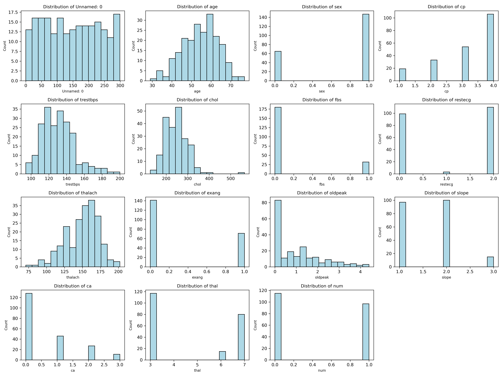
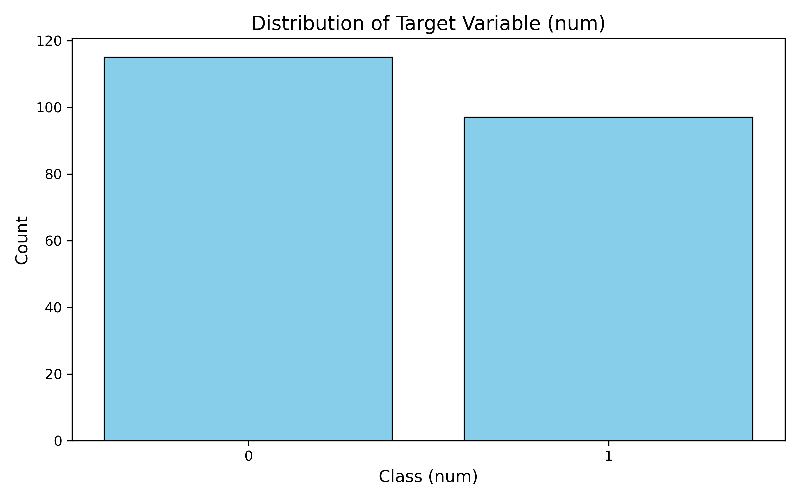
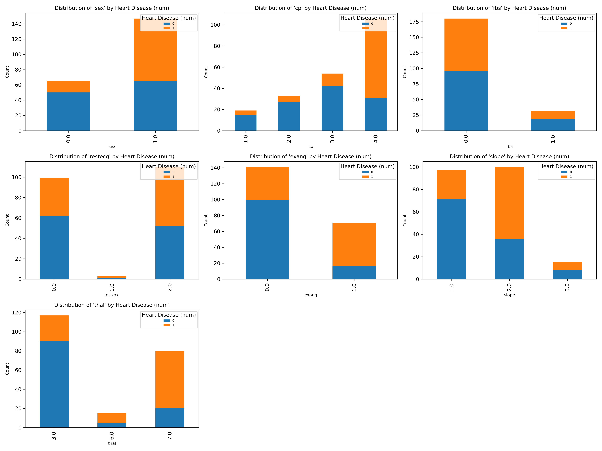
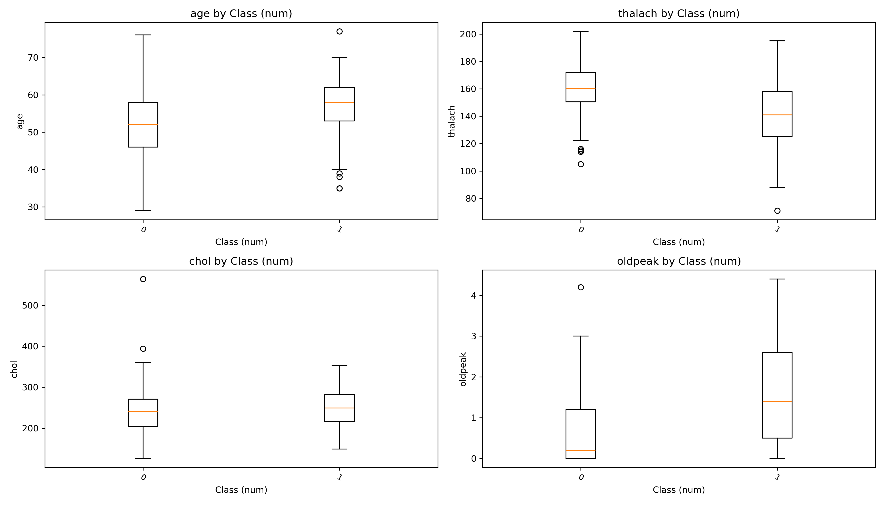

| fit_time | score_time | test_score | train_score | |
|---|---|---|---|---|
| Dummy | 0.009 (+/- 0.003) | 0.005 (+/- 0.003) | 0.543 (+/- 0.007) | 0.542 (+/- 0.002) |
| Decision tree | 0.011 (+/- 0.003) | 0.003 (+/- 0.004) | 0.713 (+/- 0.048) | 1.000 (+/- 0.000) |
| SVC | 0.010 (+/- 0.003) | 0.005 (+/- 0.002) | 0.844 (+/- 0.043) | 0.929 (+/- 0.017) |
| Logistic Regression | 0.012 (+/- 0.001) | 0.005 (+/- 0.002) | 0.849 (+/- 0.027) | 0.889 (+/- 0.015) |
Predicting Heart Disease from Cleveland Database
1 Summary
In this project, we developed and evaluated several classification models to predict the presence of heart disease using the Cleveland Heart Disease dataset (Detrano et al. 1988), which includes various clinical features. We compared four models: Logistic Regression, Support Vector Classifier (SVC), Dummy Classifier (as a baseline), and Decision Tree Classifier. Logistic Regression performed the best, achieving high accuracy of 0.84 and providing interpretable coefficients that helped us understand the impact of each feature on heart disease prediction. The SVC also performed well but slightly lagged behind Logistic Regression in test accuracy with 0.82. The Dummy Classifier served as a baseline, emphasizing the need for more sophisticated models, while the Decision Tree Classifier showed reasonable performance but tended to overfit. Misclassifications were analyzed to identify potential feature engineering opportunities, and future work could include exploring alternative classifiers such as Random Forests. Additionally, incorporating probability estimates into predictions would enhance the model’s clinical usability, providing clinicians with more confidence in the results.
2 Introduction
According to a 2022 CDC federal report, the leading cause of death in the United States is heart disease (Centers for Disease Control and Prevention (CDC) 2022). At 702,880 deaths that year, the disease claimed the most lives out of popular longevity doctor Peter Attia’s so-called four horsemen, and nearly as many as cancer and diabetes (two of his other horsemen) combined (Attia 2023). Despite past efforts having led to promising declines in mortality rates, the disease has gained traction within the last 5 years in particular(Bui 2024). As such, early detection of heart disease, not to mention increased understanding of and heightened mindfulness around mitigating the risk factors for heart disease, can help improve countless lives in the United States and elsewhere.
Here we ask if we can use a machine learning algorithm to predict whether an individual has the presence of heart disease given a relevant selection of their bioinformatic data. Answering this question is important because both patients and their health teams can seek to benefit from tooling and technologies that help in the diagnostic process of such a prevalent disease. Given such prevalence, not to mention the potential gravity of heart-related conditions, detecting heart disease accurately and early on with a scalable solution in medical settings can help enhance medical care in terms of both timeliness and preparedness, to name a few aspects. Thus, if a machine learning algorithm can accurately and effectively predict whether an individual may harbour this disease early on, this could advance the timeline of early intervention, scale heart disease diagnosis efforts, and lead to better patient outcomes, as well as reduce the risk of future complications implicated with having heart disease.
3 Methods
3.1 Data
For this project, we will be using the Heart Disease UCI dataset created by R. Detrano, A. Jánosi, W. Steinbrunn, M. Pfisterer, J. Schmid, S. Sandhu, K. Guppy, S. Lee, and V. Froelicher at the Department of Medicine, Veterans Administration Medical Center, Long Beach, California (Detrano et al. 1988). It was sourced from the UC Irvine Machine Learning Repository (Detrano et al. 1988) and can be found here. The specific file used represents the Cleveland locality. The dataset contains 303 rows, with each row representing summary statistics for a particular patient, and 14 columns with 13 features and 1 target variable. The target variable is the diagnosis of heart disease (angiographic disease status), and the value 0 is for no diagnosis of heart disease and the value 1 is for the diagnosis of heart disease. The 13 features are as follows:
- Age
- Sex
- Chest pain type
- Resting blood pressure
- Serum cholesterol
- Fasting blood sugar
- Resting electrocardiographic
- Maximum heart rate achieved
- Exercise induced angina
- Oldpeak = ST depression induced by exercise relative to rest
- The slope of the peak exercise ST segment
- Number of major vessels
- Thalassemia blood disorder
They are encoded in the dataset as follows:
- #3 (age)
- #4 (sex)
- #9 (cp)
- #10 (trestbps)
- #12 (chol)
- #16 (fbs)
- #19 (restecg)
- #32 (thalach)
- #38 (exang)
- #40 (oldpeak)
- #41 (slope)
- #44 (ca)
- #51 (thal)
- #58 (num) (the predicted attribute)
3.2 Preprocessing
The preprocessing steps are crucial for preparing the heart disease dataset for analysis and model training. This section outlines the steps taken to clean and transform the raw data before it is split into training and test datasets.
Firstly, directories are created to store raw and processed data. If the directories do not already exist, they are created programmatically.
Next, the heart disease dataset is downloaded as a ZIP file from the UCI Machine Learning Repository. Once downloaded, the ZIP file is extracted to the raw directory.
After extraction, the dataset is read into a Pandas DataFrame. The column names are defined manually, as the dataset does not include a header row. At this point, it was noted that the raw dataset uses the string ‘?’ to represent missing values. These values are replaced with NaN to facilitate proper handling during further analysis.
As briefly mentioned in the above section, the target variable, num, represents the presence
or absence of heart disease. The original values of num range from 0 to 4, where any value greater than 1
indicates the presence of heart disease. To simplify the analysis, all values greater than 1 are mapped to 1
(i.e., indicating the presence of heart disease).
Finally, to prepare the dataset for model training and evaluation, it is split into training and test subsets. The split is done in a 70/30 ratio, with stratification to ensure that the distribution of the target variable num is preserved in both subsets. The resulting training and test sets are then saved as CSV files for future use such as in the next steps, which will involve analyzing the data, training models, and assessing their performance.
3.3 Analysis
In this project, we used the Logistic Regression, SVC, Decision Tree, and Dummy Classifier as a baseline to build a classification model aimed at predicting the presence of heart disease based on clinical features. We used all available features from the dataset, excluding some variables related to the error of certain measurements. The data was split into a training set (70%) and a test set (30%). To choose the best value for the hyperparameter k, we used 5-fold cross-validation, with accuracy as the classification metric. We also standardized the data before fitting the model to ensure the features were on a similar scale. The analysis was carried out using Python, with the following libraries: NumPy, Pandas, scikit-learn, and Matplotlib.
4 Results & Discussion
📊 Visualization Section
The following plots provide insights into the dataset, including target variable distribution, categorical feature relationships, and model performance (confusion matrix). Each visualization highlights critical aspects of the analysis.
4.0.1 Data Set Summary
The heart disease dataset used in this project is obtained from the UC Irvine Machine Learning Repository.
The dataset contains 13 features, and the target is a binary variable (num) where:
0: No presence of heart disease1or higher: Presence of heart disease.
Out of the 13 features: - 8 are categorical (e.g., sex, cp,
thal). - 5 are numeric (e.g., age, chol,
thalach).
These features include various physiological parameters, such as: - Resting blood pressure, - Serum cholesterol levels, - Maximum heart rate achieved.
Additionally, it records potential signs of heart disease, such as chest pain type (cp) and
exercise-induced angina (exang).
The dataset contains 303 observations, and the original study used a Bayesian model to estimate the probability of having heart disease (Detrano et al. 1988).
As shown in Figure 1, the numeric features of the dataset have varying distributions, which provide an overview of the data’s spread and tendencies.

The target variable (num) is distributed as displayed in Figure 2, where the majority of the samples are classified into the lower
categories of heart disease.

num).
For categorical features, the grouped distributions based on the presence of heart disease are shown in Figure 3. These stacked bar plots illustrate the relationship between categorical variables and the target variable.

num).
Boxplots for selected numeric features grouped by the target variable (num) are presented in Figure 4, offering insights into the spread and central tendencies of the selected features for each heart disease category.

num).
✅ Visualization Section Completed
This concludes the visualization section. The insights derived from these plots will be used to guide subsequent analyses and modeling steps. If additional visualizations are required, they can be added here.
4.1 Discussion
| fit_time | score_time | test_score | train_score | |
|---|---|---|---|---|
| Decision Tree | 0.012 (+/- 0.001) | 0.004 (+/- 0.003) | 0.778 (+/- 0.037) | 0.960 (+/- 0.014) |
| SVC | 0.008 (+/- 0.003) | 0.005 (+/- 0.003) | 0.849 (+/- 0.040) | 0.875 (+/- 0.007) |
| Logistic Regression | 0.012 (+/- 0.001) | 0.006 (+/- 0.001) | 0.858 (+/- 0.053) | 0.881 (+/- 0.009) |
After doing checking on the baseline (Table 1) we proceed to do the cross-validation. In the final cross-validation results (Table 2), both the best SVC and best Logistic Regression achieve excellent test scores. The small gap between their training and test scores suggests that both models generalize well, with minimal overfitting. However, Logistic Regression has a smaller gap between training and test scores (0.023) compared to SVC (0.026), suggesting that it might generalize slightly better than SVC.
| Model | Accuracy | |
|---|---|---|
| 0 | SVC fitted | 0.82 |
| 1 | Logistic Regression fitted | 0.84 |
This is further confirmed by the test scores Table 3, which show that Logistic Regression slightly outperforms SVC on unseen data.
| Feature | Coefficient | |
|---|---|---|
| 0 | pipeline-1__ca | 0.674653 |
| 1 | onehotencoder__cp_4.0 | 0.614785 |
| 2 | pipeline-2__thal_7.0 | 0.450091 |
| 3 | standardscaler__oldpeak | 0.400388 |
| 4 | onehotencoder__exang_1.0 | 0.323725 |
| 5 | onehotencoder__sex_1.0 | 0.297677 |
| 6 | onehotencoder__slope_2.0 | 0.275565 |
| 7 | standardscaler__trestbps | 0.253341 |
| 8 | onehotencoder__restecg_2.0 | 0.168724 |
| 9 | onehotencoder__fbs_0.0 | 0.161019 |
| 10 | standardscaler__age | 0.0274616 |
| 11 | standardscaler__chol | 0.0143758 |
| 12 | pipeline-2__thal_6.0 | 0.00637277 |
| 13 | onehotencoder__restecg_1.0 | -0.00791221 |
| 14 | onehotencoder__cp_2.0 | -0.055756 |
| 15 | onehotencoder__slope_3.0 | -0.124035 |
| 16 | onehotencoder__slope_1.0 | -0.15156 |
| 17 | onehotencoder__restecg_0.0 | -0.160842 |
| 18 | onehotencoder__fbs_1.0 | -0.161049 |
| 19 | onehotencoder__cp_3.0 | -0.245399 |
| 20 | onehotencoder__sex_0.0 | -0.297707 |
| 21 | onehotencoder__cp_1.0 | -0.31366 |
| 22 | onehotencoder__exang_0.0 | -0.323755 |
| 23 | standardscaler__thalach | -0.406858 |
| 24 | pipeline-2__thal_3.0 | -0.456493 |
To better understand the relationship between each feature and heart disease presence, we examine the coefficients obtained from the logistic regression model (Table 4). Each coefficient indicates how the corresponding feature influences the likelihood of heart disease. Positive coefficients suggest that as the feature increases, the likelihood of having heart disease increases as well, while negative coefficients suggest the opposite.

In Figure 5, we can see that features like
ca, oldpeak, and trestbps have relatively high positive coefficients,
meaning they strongly influence the prediction of heart disease. This makes sense, as research shows that
high blood pressure is one of the most important causes of heart disease (Fuchs and Whelton 2020).
For oldpeak specifically, research shows that ST depression during exercise is linked to higher risk of
heart disease(Carlen et al. 2019). In contrast, features like thalach
have large negative coefficients, suggesting they are linked to a lower likelihood of heart disease.
Features like age and chol, however, show little impact, as their coefficients are
close to zero.
Interestingly, females (sex = 0) are more likely to be free of heart disease, as indicated by
the large negative coefficient for onehotencoder__sex_0.0. In contrast, males (sex
= 1) are more likely to have heart disease, as reflected by the high positive coefficient for
onehotencoder__sex_1.0. This is supported by Regitz-Zagrosek and Gebhard (2023), which highlights how biological sex differences, such as
premenopausal women having a relative protection from coronary artery disease.
However, there are some limitations of this study. First of all, as categorical features were split into multiple binary columns, interpreting the coefficients for these encoded variables can be tricky. It can be difficult to directly correlate the coefficients with the original feature, and whether this approach is reasonable should also be questioned.
Additionally, while the model’s coefficients offer useful insights, they should be taken with caution. Further exploration into feature relationships and more advanced modeling techniques might be required to better understand the complexities of predicting heart disease.
| age | sex | cp | trestbps | chol | fbs | restecg | thalach | exang | oldpeak | slope | ca | thal | True Label | Predicted Label | |
|---|---|---|---|---|---|---|---|---|---|---|---|---|---|---|---|
| 0 | 64 | 0 | 4 | 130 | 303 | 0 | 0 | 122 | 0 | 2 | 2 | 2 | 3 | 0 | 1 |
| 1 | 48 | 1 | 2 | 110 | 229 | 0 | 0 | 168 | 0 | 1 | 3 | 0 | 7 | 1 | 0 |
| 2 | 59 | 1 | 1 | 160 | 273 | 0 | 2 | 125 | 0 | 0 | 1 | 0 | 3 | 1 | 0 |
| 3 | 58 | 1 | 4 | 100 | 234 | 0 | 0 | 156 | 0 | 0.1 | 1 | 1 | 7 | 1 | 0 |
| 4 | 64 | 1 | 3 | 140 | 335 | 0 | 0 | 158 | 0 | 0 | 1 | 0 | 3 | 1 | 0 |
From Table 5, we can see that false
Positives (e.g., index 0): Predicted as 1.0 (positive for heart disease), but true label is 0.0. This
individual has a high cholesterol level (chol = 303.0), moderate oldpeak
(oldpeak = 2.0), and significant ca = 2.0, which might make the model lean toward
predicting heart disease incorrectly.
False Negatives (e.g., indices 1, 2, 3, 4): Predicted as 0 (no heart disease), but true label
is 1. Many of these cases involve features like high thalach (e.g., 168.0, 158.0)
and slope = 3.0 or 1.0, which the model might not weigh heavily enough.
Overall the Logistic Regression model performs well and could be useful as a first-pass screening tool in a clinical setting, but there are ways we can make it even better. First, we can take a closer look at the misclassified examples and compare them to correctly classified ones. This could help us identify features or patterns the model struggles with and guide us in improving the features or adding new ones that capture important relationships.
Next, we could test other classifiers to see if they perform better. For example, Random Forests are good at handling feature interactions automatically, which could help improve accuracy.
Finally, instead of just giving a prediction, the model could provide a probability for each class. This would help clinicians understand how confident the model is in its predictions. For low-confidence cases, additional tests or evaluations could be done to avoid mistakes.
These changes could make the model even more accurate and useful in practice.
5 References
Attia, Peter. 2023. Peter on the Four Horsemen of Chronic Disease. PeterAttiaMD.com. https://peterattiamd.com/peter-on-the-four-horsemen-of-chronic-disease/.
Bui, Trang. 2024. “Cardiovascular Disease Is Rising Again After Years of Improvement.”
Stat News. https://www.statnews.com/2024/10/15/cardiovascular-disease-rising-experts-on-causes/.
Carlen, A., M. Gustafsson, Å. Aneq, and E. Nylander. 2019. “Exercise-Induced ST Depression in an
Asymptomatic Population Without Coronary Artery Disease.” Scandinavian Cardiovascular
Journal 53 (4): 206–12. https://doi.org/10.1080/14017431.2019.1626021.
Centers for Disease Control and Prevention (CDC). 2022. “Leading Causes of Death.”
National Center for Health Statistics. https://www.cdc.gov/nchs/fastats/leading-causes-of-death.htm.
Detrano, R., A. Jánosi, W. Steinbrunn, M. Pfisterer, J. Schmid, S. Sandhu, K. Guppy, S. Lee, and V.
Froelicher. 1988. “Heart Disease Data Set.” In Proceedings of Machine Learning and
Medical Applications. UC Irvine Machine Learning Repository. https://archive.ics.uci.edu/dataset/45/heart+disease.
Fuchs, F. D., and P. K. Whelton. 2020. “High Blood Pressure and Cardiovascular Disease.”
Hypertension 75 (2): 285–92. https://doi.org/10.1161/HYPERTENSIONAHA.119.14240.
Regitz-Zagrosek, V., and C. Gebhard. 2023. “Gender Medicine: Effects of Sex and Gender on
Cardiovascular Disease Manifestation and Outcomes.” Nature Reviews Cardiology 20 (4):
236–47. https://doi.org/10.1038/s41569-022-00797-4.